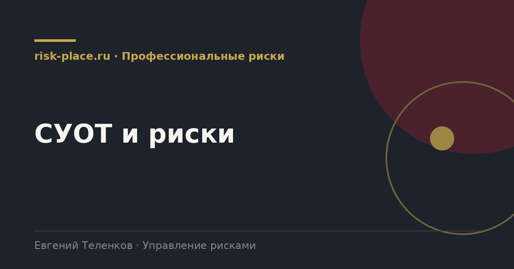

Главная · Библиотека · Профессиональные риски · СУОТ и риски
Библиотека · Профессиональные риски
Оценка рисков это не отдельная задача, а одна из процедур системы. Вне системы она не работает.

Система управления охраной труда это комплекс взаимосвязанных элементов, устанавливающих политику и цели в области охраны труда и процедуры по их достижению. Обязанность обеспечить создание и функционирование системы возложена на работодателя Трудовым кодексом.
Минтруд России утвердил примерное положение о системе управления охраной труда, которым удобно пользоваться как каркасом. Оно носит примерный характер, работодатель адаптирует его под свою деятельность, численность и структуру.
Управление рисками одна из них, но она влияет почти на все остальные.
Именно эта связь превращает оценку рисков из бумаги в инструмент.
| Процедура | Что берет из оценки рисков |
|---|---|
| Обучение и инструктаж | Содержание программ строится по выявленным опасностям конкретных рабочих мест |
| Средства защиты | Перечень и нормы выдачи обосновываются опасностями, а не только типовыми нормами |
| Работы повышенной опасности | Перечень таких работ формируется по опасностям с высоким уровнем риска |
| Медицинские осмотры | Учитываются факторы, выявленные при оценке, наряду с результатами специальной оценки |
| Реагирование на аварии | Сценарии реагирования строятся по наиболее тяжелым выявленным опасностям |
| Планирование мероприятий | Годовой план по охране труда формируется прежде всего из мер по снижению рисков |
Политика и цели в области охраны труда с измеримыми показателями. Распределение обязанностей и ответственности по уровням управления, от руководителя до работника. Описание всех процедур с указанием порядка, периодичности и ответственных. Порядок планирования мероприятий и выделения ресурсов. Порядок контроля функционирования системы и реагирования на несоответствия. Порядок управления документами и записями.
Практический совет по объему. Положение на сто страниц с пересказом нормативных требований бесполезно и никем не читается. Работающий документ содержит короткое описание каждой процедуры и ссылку на отдельный порядок или регламент, где она расписана подробно. Так документ остается живым, а изменение одной процедуры не требует переутверждения всего положения.
Частые вопросы
Одна форма для любого вопроса
Расскажем о ближайших датах, предложим формат под ваш состав участников и назовем порядок бюджета.
Предпочитаете почту — напишите на info@risk-place.ru. Адрес: Москва, улица Скаковая, 32с2.
 risk-
risk-